User Manual - Malaria Re-Prioritization Tool
Abstract
This document provides a detailed overview of how National Malaria Programs can leverage the Malaria Reprioritization tool to inform the proper targeting of interventions, with a focus on Insecticide-Treated Nets (ITNs). While complex mathematical and statistical models are typically used to guide these decisions, such approaches often require the expertise of external consultants and lengthy turnaround times that do not align with the rapid timelines of campaign implementation and fund disbursement. Faced with time constraints, National Malaria Programs can adopt this user-friendly software tool for urgent decision-making, although it is not intended to replace more advanced mathematical and statistical techniques.
Our approach is delivered via an R Shiny Application (ShinyApp), which is accessible both online and offline to mitigate internet connectivity issues. The application helps with data visualizations, data cleaning and composite score calculations for malaria risk assessment. This document outlines the steps necessary to use the application effectively. Developed in collaboration with Nigeria’s National Malaria Elimination Programme, the application is designed to be flexible, generic, scalable, and user-friendly - catering to both novice and advanced users.
Introduction to Malaria Re-Prioritization Tool (MRPT)
Malaria continues to pose a significant public health challenge in sub Saharan Africa. In urban areas malaria burden is generally low and typically focal. The focal transmission in neighborhoods with inadequate housing and sanitation systems which heightens the malaria risk. Unfortunately designing intervention approaches for cities is challenging due to insufficient data to identify high burden areas. With the decrease in funding and constrained resources, efficient resource allocation and proper targeted interventions are more critical than ever. The Malaria Re-Prioritization Tool (MRPT) is an R-Shiny application co-developed with end-users to address these challenges head-on.
The MRPT offers a standardized, scalable platform that empowers users to conduct malaria risk assessments and optimize intervention strategies. Users begin by uploading a data file containing variables associated with malaria transmission alongside a shapefile of the area of interest. To ensure the accuracy of the tool’s outputs, users should validate the data’s credibility using platforms such as Google Earth Engine or Google Earth Pro. Once validated, these variables are then used to identify high-risk wards, the tool’s ability to allow for uploading data and shapefiles demonstrates the tool’s generilizability, scalability, and alignment with national malaria strategies in different contexts.
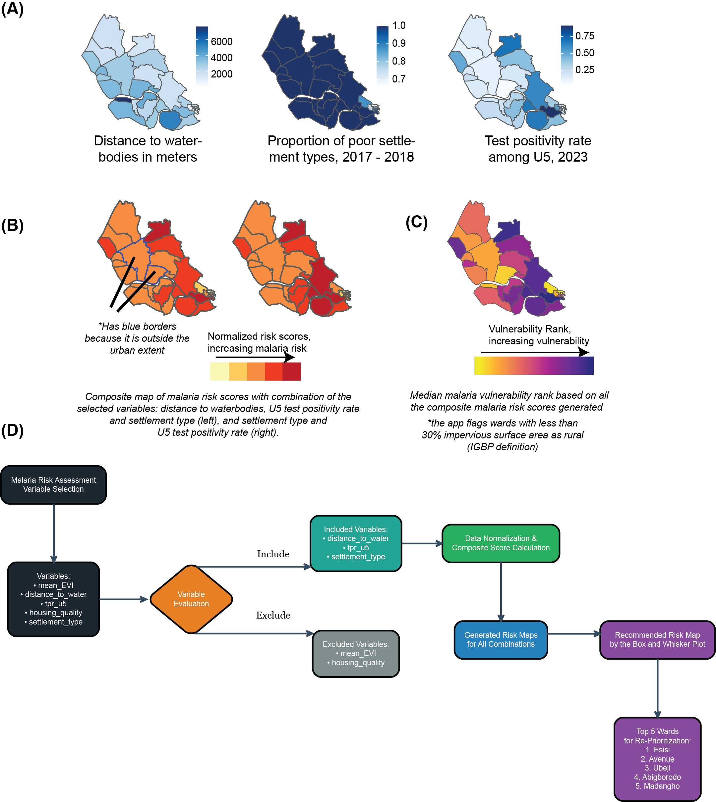
By facilitating precise targeting of interventions, the MRPT helps maximize the impact of limited financial resources and supports more informed and standardized decision-making. User involvement throughout the development process has ensured the tool’s usability, reliability, and methodological rigor. This continuous stakeholder engagement has not only refined the MRPT but also reinforced its role as a vital instrument in reducing malaria in urban Nigeria through optimized resource distribution and strategic intervention prioritization.
Purpose of This Guide
This guide provides a step-by-step walkthrough for using the MRMT, from data preparation to final analysis and interpretation. By following this manual, users will gain a comprehensive understanding of how to:
Upload, clean, and process data and shapefiles required for malaria risk assessment.
Customize settings to adjust key malaria risk factors based on available information.
Generate malaria risk maps at the ward level, displaying priority areas for intervention.
Interpret the outputs to inform evidence-based malaria control strategies.
These steps ensure users can effectively navigate the tool from initial data preparation to final analysis and interpretation. By following this guide, users will gain the necessary knowledge to leverage the MRPT for evidence-based decision-making, helping to optimize malaria control strategies at the ward level. The tutorial data can be downloaded using the link here (shapefile and variables) to follow the tutorial.
Who Should Use This Tool?
The MRMT is intended for:
National Malaria Elimination Programs (NMEP)
Public health decision-makers and policy planners
Epidemiologists and malaria researchers
Non Governmental Organizations (NGOs) and health organizations involved in malaria control
Field teams conducting malaria surveillance and intervention distribution.
The tool can be accessed online and offline (to download the desktop app).
Installation of the desktop version
We have created a desktop version of the MRPT that can run without internet connection. This is recommended for users without a strong internet connection. They can download the application access it through flash drives for installation. To install the application follow the steps below.
Installation Steps:
Download and run MRPT_Setup.exe as administrator.
Follow all the installation prompts. for some users the firewall or antivirus may block the installition process so you will have to bypass this by temporarily disabling them.
Launch the app from your desktop or start menu and this will start an R session in the terminal.
The app contains all necessary components including - ability to start an R session and required packages. Note you must have R installed on your machine as the applications and then open up the local web environment/dashboard/localhost application.
Currently the appliation works only on windows operating system, you need sdministrator privileges to installation and requires about 2GB free disk of space. If you encounter any issues or have questions, please email.
Home Page
When one reaches the landing page the first thing that appearsis a pop up “information” message box that disappears after a minute.
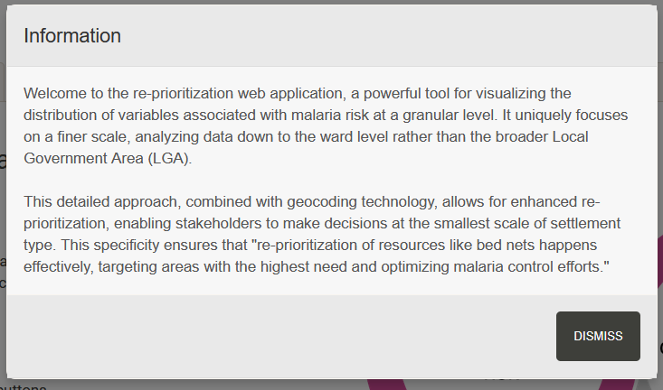
Once the pop-up information Tab disappears the landing page can clearly be seen with the instructions to the user (see below).

Input variables
Upload data
The input variable tab (see Figure 1) enables you to upload both your shapefile and dataset. The zipped shapefile folder must contain a 1.) geometry file (.shp) - stores the spatial features (points, lines, and polygons), 2.) shape index file (.shx) - provides an index linking geometry and links the geometry to the attributes, and 3.) attribute table (.dbf) - stores tabular data (for example names IDs, other attrubutes for each shape). The dataset should be a .csv file and contain all the variables you want to explore. (Please refer to purpose of this guide and to zip files please follow this link). Ensure you know where your data files are saved, navigate to the appropriate folder, and upload the files.
The tool accepts .CSV files containing ward names and various risk factors, such as settlement type, vegetation index, and rainfall data. After uploading, the system checks for missing values and ward name matches between your files.
Handling unmatched ward names

Once the ward names have been corrected, you can select the variable that you interested in visualizing. Some variables have NAs and this is addressed using several pathways see next section.
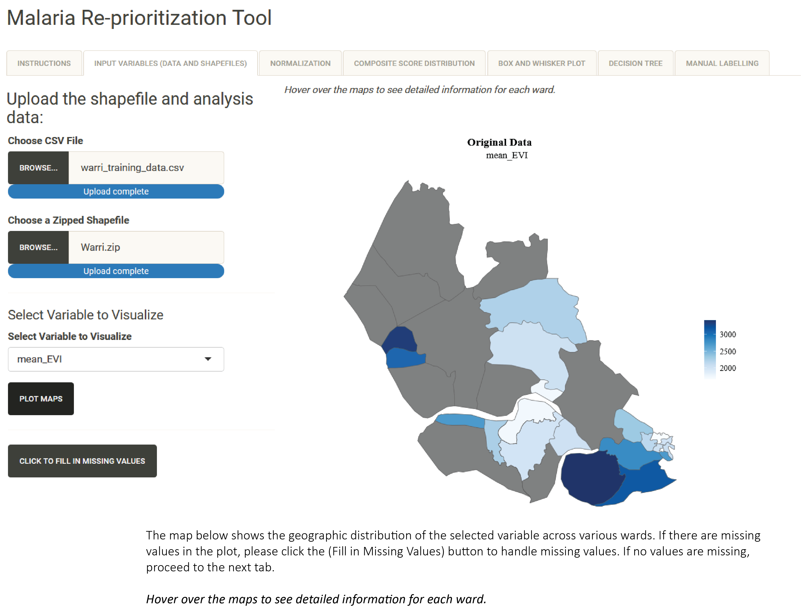
Handling missing values
When missing values are detected (see - figure 3), the tool offers three methods for handling t
spatial neighbor mean method uses values from adjacent wards, particularly useful for spatially correlated variables
regional mean provides an average from the entire study area
regional mode uses the most common value, suitable for categorical variables, this is also recommended when the data is sparse and neighboring polygons have no data
Scroll down the “INPUT VARIABLES” and click on “CLICK TO FILL MISSING VALUES” and a drop down menu will appear that allows you to specify one of the three smoothing approaches
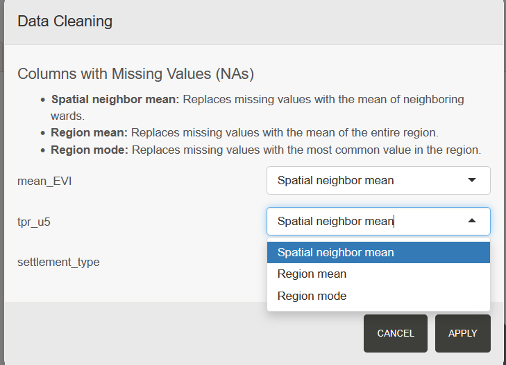
After have selected the smoothing method fo choice click apply button and two maps will appear showcasing the map prior to smoothing and the map after smoothing (missing values) as shown in figure 4). You
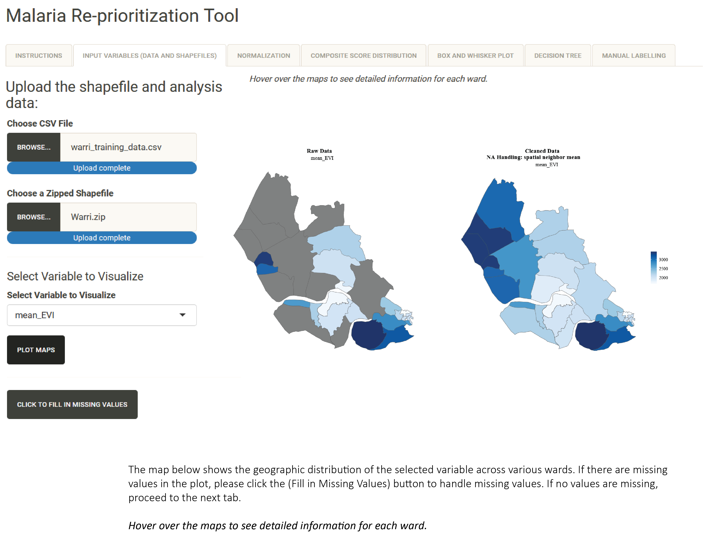
The left map displays the original data with missing values, while the right map shows the cleaned dataset. This visual comparison helps you verify that the cleaning process produced reasonable results. The color gradient indicates the variable’s magnitude across different wards, with tooltips providing detailed information for each area.
Specifying relationships between malaria burden and various risk factors
Variable Relationships
Malaria burden is shaped by a complex interplay of environmental, socio-economic, biological, and healthcare-related factors. Understanding how these variables influence malaria transmission is critical for designing effective intervention strategies. In this section we allow the users to specify the relationship each variable has with the burden of malaria direct or inverse. Notice that our approach assumes that relationships are linear. We acknowledge that relationships may be non-linear. Hence, we suggest that users should be cautious in their choices as this has implications for the areas suggested for exclusion during net campaigns.
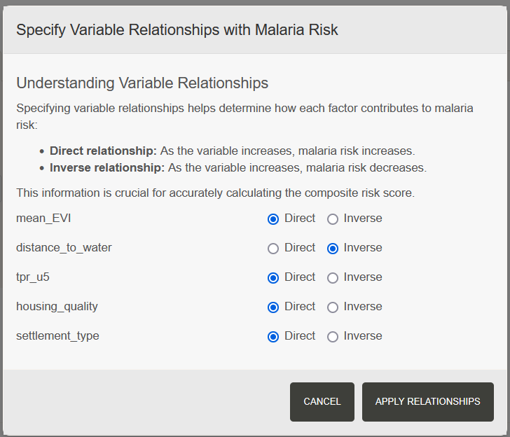
1. Environmental Factors
Stagnant Water: In urban areas, poor drainage systems facilitate stagnant water accumulation, increasing mosquito density.
Land Use & Deforestation: Deforestation alters mosquito habitats, sometimes increasing exposure by bringing human populations closer to vector-prone areas. Agricultural expansion can create new breeding sites, while urbanization may reduce transmission if effective drainage and housing improvements accompany growth.
2. Socio -Economic Factors
Wealth & Housing Conditions: Poverty is a significant driver of malaria burden. Households with poor-quality housing (e.g., no window screens, thatched roofs) are more susceptible due to increased indoor mosquito exposure. Conversely, wealthier households often have better housing, bed net usage, and access to healthcare, reducing infection risk.
Occupation & Mobility: People working outdoors at night (e.g., farmers, miners, and forest workers) have higher exposure to malaria vectors. Migration and travel between malaria-endemic and non-endemic regions contribute to transmission by introducing new cases to previously low-burden areas.
Education & Awareness: Communities with low malaria literacy may have poor adherence to preventive measures, such as ITN use or early treatment-seeking behavior. Health education campaigns play a crucial role in shaping community practices.
Normalization Tab
Once the relationship between each variable and the malaria burden has been selected, the values are rescaled using the min-max method. This ensures that all variables are comparable, preventing any single variable from dominating the composite score and allowing the relative contribution of each variable to be clearly identified.
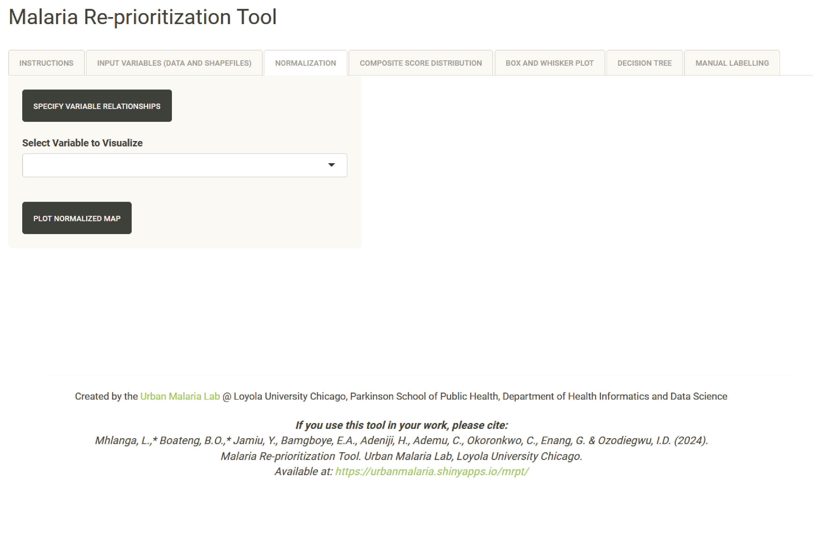
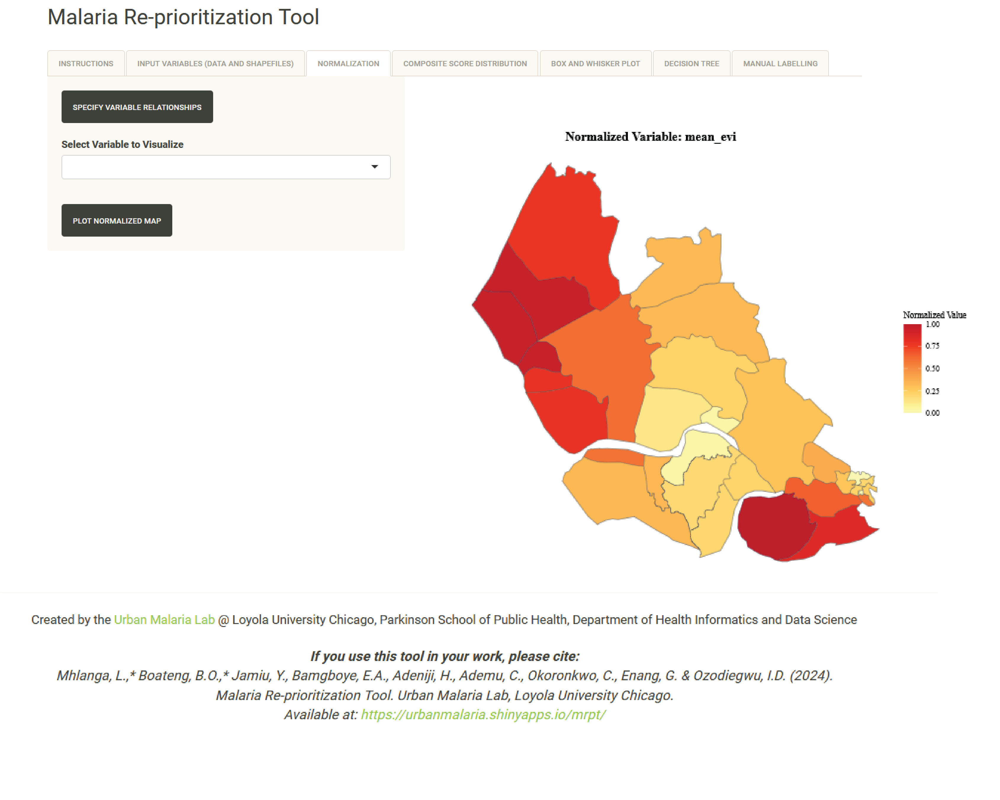
We recommend an in-depth quality assurance review of the available data and local knowledge, the next step is to select variables that accurately reflect the situation on the ground. Users should consider the following questions:
Data Validation:
The users are advised to ask themselves several questions which include - how does your dataset compare with imagery from Google Earth Engine or Google Earth Pro? Does the housing quality or settlement type data align with your local understanding of the area? Does the local knowlede corroborate the distance to water bodies data i.e. are areas with the lowest distance to water bodies measure actually near large bodies of water?Data Completeness:
What is the extent of missing values (NAs) in your data? Is it reasonable to apply any of the spatial smoothing technique? Can you trust the final output if over 40% of the wards have missing values?
Once you have addressed these questions, select the quality-assured variables that will contribute to the composite score. The tool will calculate several composite score permutations, ranging from combinations of two variables up to the total number of selected variables. For example, if you choose three variables, you should expect to see four composite maps. Note: At least two variables must be selected to generate a composite score.
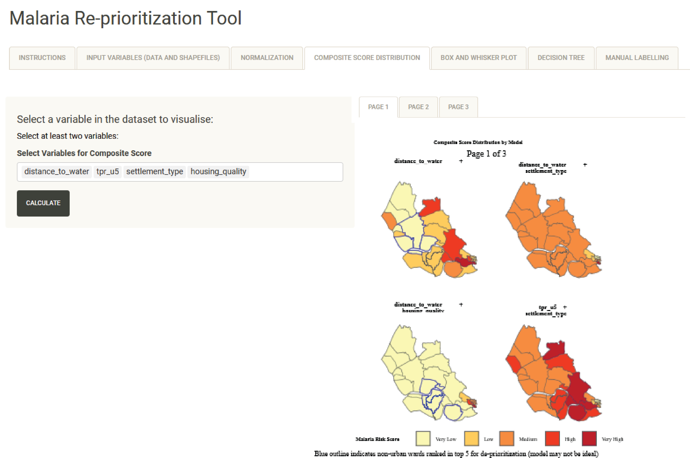
Ranking of Wards
A summary of all composite score maps is presented as a box and whisker plot, offering a statistical overview of vulnerability scores (or ranks) across wards. In this visualization, each horizontal bar represents a ward: the box shows the middle 50% of scores, and the whiskers extend to the full range. This format helps identify wards that consistently exhibit high vulnerability across various variable combinations. Additionally, users have the option to view the data as a map that displays the median score for each ward, derived from the different composite scores.
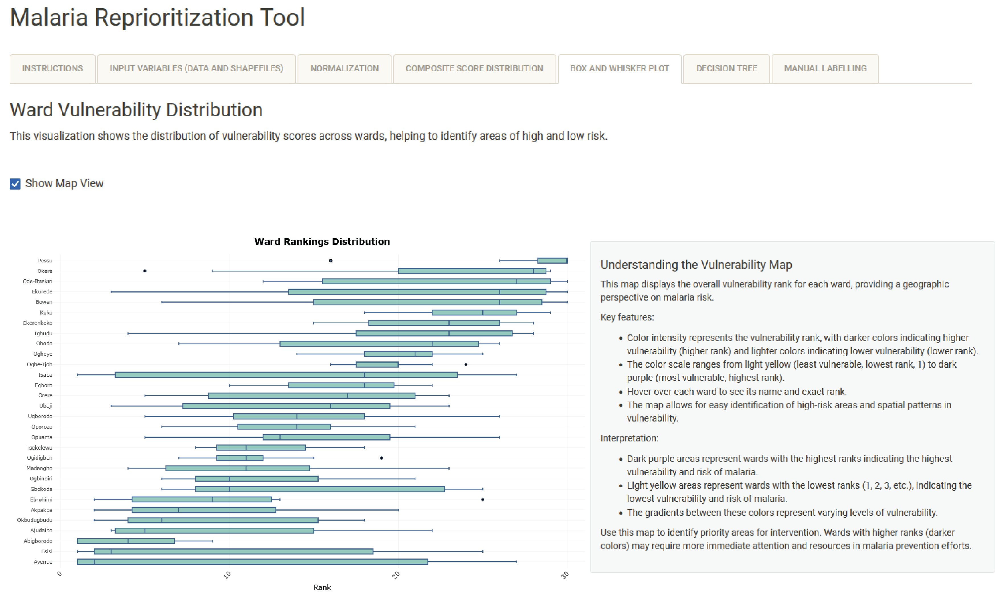
.png)
The user can toggle between the two options by clicking the “View Map” button. The ward vulnerability map translates statistical rankings into a geographic display, using a color gradient that ranges from yellow (indicating the lowest vulnerability) to dark purple (indicating the highest vulnerability). This visual representation helps to identify spatial patterns in malaria risk, making it particularly useful for understanding geographic clustering of risk and for planning targeted interventions.
Decision tree
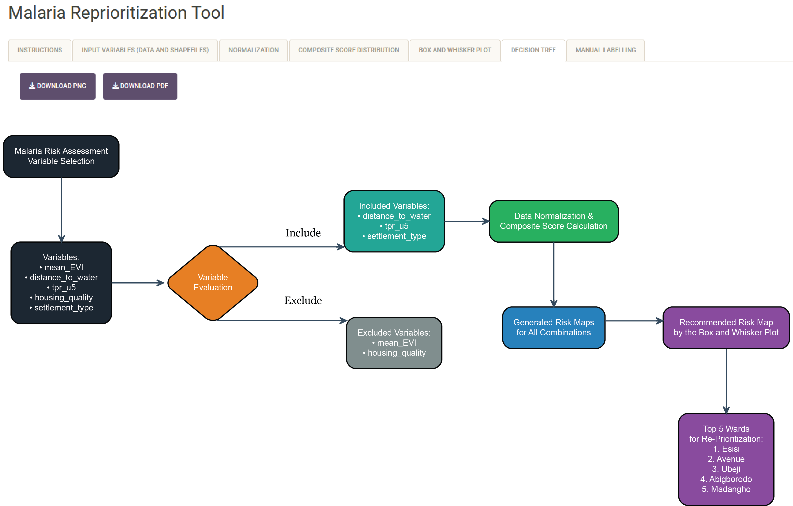
The decision tree visualizes your analysis process, from initial variable selection through to final recommendations. It shows which variables were included or excluded, how they were processed, and how they contributed to the final risk assessment. You can download this visualization in either PNG or PDF format for documentation and presentation purposes.
Manual Labelling Tab
The manual labelling feature provides street-level detail for individual wards. This view shows settlement types (formal, informal, slum, and nonresidential areas) and local infrastructure. This detailed view is particularly valuable for planning specific interventions and understanding local context.
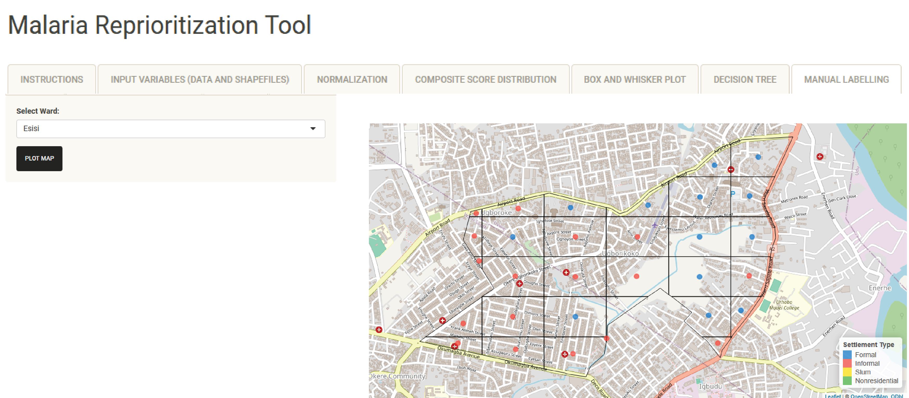
Notice that the manual labelling is only useful to the user if they have taken a moment to use Google Earth Engine or Google Earth Pro to understand the ward identified for prioritization. This entails downloading the gridded shapefiles for each of the wards in the top 5, load them on google Google Earth Pro and then for each tile use a predefined settlement type classification checklist to label the settlements into slums, informal and informal settlements and a good substitute when field visits are constrained by funding and time.
Final Note to users
The tool’s outputs support evidence-based decision making for malaria control efforts. When interpreting results, consider both the statistical rankings and spatial patterns. Pay particular attention to areas that consistently show high risk across different variable combinations and models.
For resource allocation, focus on wards that show high vulnerability in both the statistical analysis and spatial mapping. Consider the settlement types and accessibility when planning interventions. Regular updates to the analysis can help track the effectiveness of interventions over time.
Documentation and Sharing
Keep detailed records of your variable selections and decision rationale. The tool supports this by allowing you to download maps, statistical summaries, and the decision tree visualization. When sharing results, include both the overview maps and detailed ward-level information to provide a complete picture of the risk assessment.
Remember to validate results against local knowledge and existing malaria data. Regular updates to the analysis can help track changes over time and assess the impact of interventions.
For additional support or questions, contact: lmhlanga@luc.edu or bboateng1@luc.edu (co -developers) and iozodiegwu@luc.edu(Principal Investigator).